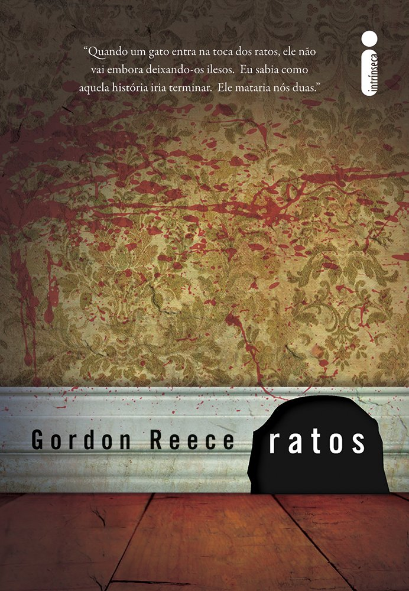
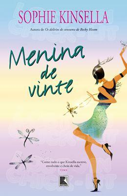
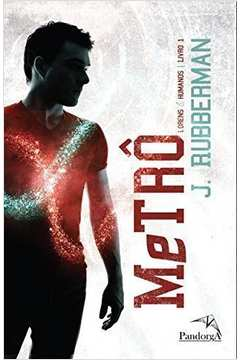

Olá, nesse site trazemos alguns livro que atráves da capa criamos um pré-concéito, mas que ao longo da leitura nos envolvemos com a história e com os personagens de tão surpriendentes que são!
Ratos

Shelley e a mãe foram maltratadas a vida inteira, são como ratos, estão sempre entocadas e coagidas. Shelley foi vítima de bullying que culminou em um violento atentado, não frequentando a escola. Ainda se refazendo do ataque e se recuperando do humilhante divórcio dos pais, ela e a mãe vivem refugiadas em um chalé afastado da cidade. Confiantes de que o pesadelo acabou, elas enfim se sentem confortáveis, mas, na noite em que Shelley completa dezesseis anos, um estranho invade a tranquilidade das duas e um sentimento é despertado na menina. Os acontecimentos que se seguem instauram o caos em tudo o que pensam e sentem em relação a elas mesmas e ao mundo que sempre as castigou. Até mesmo os ratos têm um limite.
Menina de Vinte

Lara Lington sempre teve uma imaginação fértil. Agora ela começa a se perguntar se está ficando maluca de vez. Meninas normais de vinte poucos anos não veem fantasmas, né? Pelo menos era o que ela pensava até o espírito da tia-avó Sadie, que foi uma jovem dançarina de Charleston com ideias avançadas sobre moda e amor, aparecer misteriosamente com um último pedido: Lara precisa localizar um colar que foi dela por mais de 75 anos. Só assim tia Sadie poderá descansar em paz. Além de encontrar a joia, Lara tem que lidar com probleminhas do dia a dia: a sócia foi curtir um romance em Goa, sua empresa está afundando e ela acabou de ser abandonada pelo homem “perfeito”. Nesta divertida história, Lara e Sadie são duas meninas de vinte bem diferentes que vão aprender a importância dos laços familiares e da amizade
Metrô : Lorens & humanos

Algo que me chocou profundamente durante meu curto aprendizado ao lado de Loan, foi a cena repleta de sangue e ódio em que um homem mata sua mulher após ter acabado de dar à luz. O recém-nascido foi vitimado na sequência pela fúria incontrolável de seu pai.Na ocasião, eu sequer sabia da profusão de sentimentos que envolvem o nascimento de uma criança em uma situação normal. Tão inimaginável quanto, precisa ser o poder de uma força destrutiva contrária, capaz de inverter toda a lógica daquela situação. E mesmo assim, ausente de qualquer sentimento - algo peculiar à nossa raça jamais esquecer aqueles momentos tão estranhamente desconfortáveis.Amor, ódio, alegria ou tristeza. Palavras tão estranhas quanto as suas reações nos humanos, quando analisadas sob a perspectiva de um loren. No seu mundo, se vocês pudessem nos ver nós seríamos a personificação da energia em tons de azul. Em nosso mundo, vocês chamariam a atenção devido às estranhas reações quando submetidos aos vários tons de energia, em especial a de coloração vermelha. Energia a qual julgávamos ser imunes, até pouco tempo atrás...